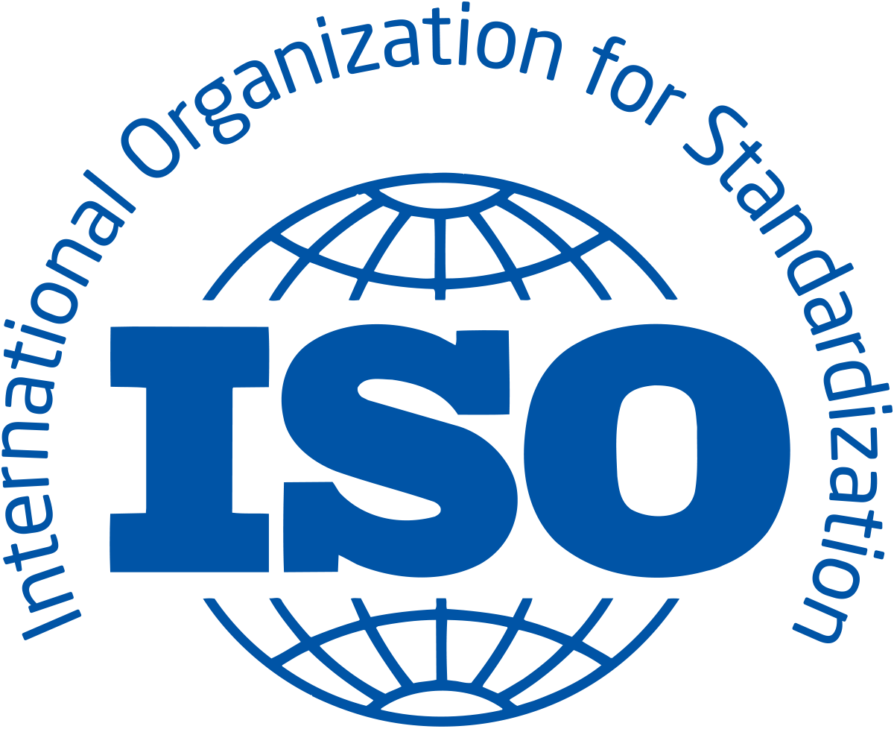

<section id="about" class="about bloque3">
    <div class="container">

        <div class="row">
            <div class="col-lg-6">
                
            </div>
            <div class="col-lg-6 pt-4 pt-lg-0 content">
                <h3>PARA QUE SIRVE EL SISTEMA DE GESTION DE CALIDAD</h3>
                <p class="fst-italic">
                    Nos ayuda a estar alineados en las actividades que se desarrollan en cada área de trabajo, generando
                    mejor
                    control en la mejora continua.
                </p>
                <h4>Beneficios de la Certificación</h4>
                <ul>
                    <li><i class="bi bi-check-circle"></i> Participación y compromiso del personal</li>
                    <li><i class="bi bi-check-circle"></i> Reconocimiento a nivel mundial</li>
                    <li><i class="bi bi-check-circle"></i> Mejor control administrativo</li>
                    <li><i class="bi bi-check-circle"></i> Mejor imagen de la empresa</li>
                    <li><i class="bi bi-check-circle"></i> Clientes satisfechos</li>
                    <li><i class="bi bi-check-circle"></i> Reducción de Costos</li>
                    <li><i class="bi bi-check-circle"></i> Nuevos Mercados</li>
                    <li><i class="bi bi-check-circle"></i> Rentabilidad</li>
                </ul>

            </div>
        </div>

    </div>
</section><!-- End About Section -->
<!-- ======= Services Section ======= -->